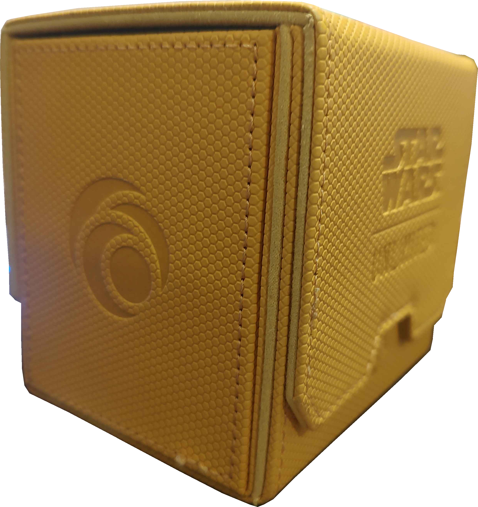
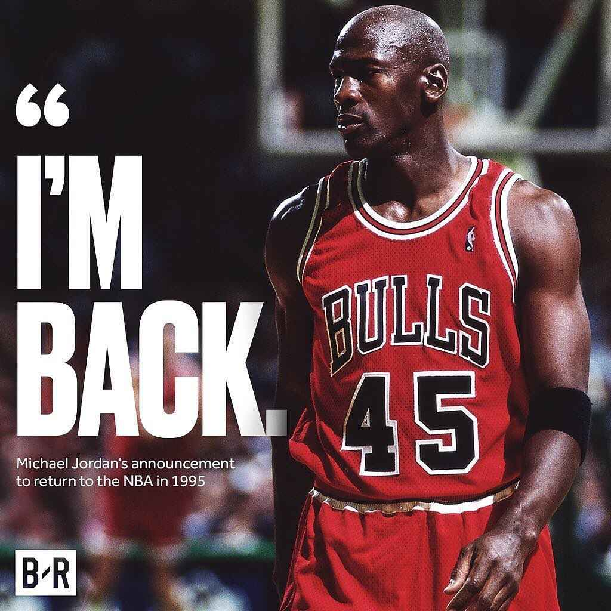

This round of patch notes is primarily aimed at easing in a couple power outliers, as well as swapping out some slots for other options that should make for more interesting drafts. A couple underperforming decks (in particular the artifact sacrifice decks) also got some fun new toys. This new version of the cube should be more evenly balanced and fun to draft.
Well, let's start off with the big one. Essence Reliquary has been the number-one card players have complained about, pretty much since the cube has existed. I was hesitant to remove the card at first, both due to the massive amount of artifact removal running around in the cube and because I just plain liked the card, and there wasn't anything that felt like an appropriate power downgrade without just being a different card. Still, it was impossible to ignore the warping effect it was having on the format, both in 1v1 games and in Rotodrafts. If you didn't have removal for it immediately and hadn't already functionally won the game, you just got buried under value. With the way the cube is designed, it's so easy to put together some truly silly combos with this card. And even though there were a lot of ways to answer artifacts, not only is that still a narrower band of cards than can answer something like a creature, even if a 3 mana creature in the cube was this much of an "Answer or Die", I still think it would be correct to cut it.
So, Reliquary is gone, what's in? Meticulous Excavation was a card that was on my radar for quite a long time, but one that I was hesitant to include. 3 mana felt pretty steep for this effect, but more than that the Unearth text felt like it really overcomplicated things for very little added value. However, we do currently have one Unearth card in the cube (Scrapwork Mutt), and with this card being added, another Unearth card is being added as well. (Or should I say, is returning.) This card can do everything Essence Reliquary could do, just slower, and maybe once in awhile you'll get some cool value out of an Unearth creature with this card. I'm interested to see where it lands on power level.


Before now, Essence Reliquary was basically carrying the self-bounce theme of the cube on its back. The previous swap represents a pretty significant nerf for this archetype, so a couple of additional bounce cards are being added to help shore up the deck. One of them is Nurturing Pixie, the canonical card you use in current year to bounce noncreature permanents for value. If it got Hopeless Nightmare banned in standard, I reckon it'll do nicely with Omen of the Sun and Grim Bauble in this cube as well. This also adds another one-drop to the cube, a piece of feedback I've gotten a couple of times as well. This isn't always a card you'll want to run out on turn 1 obviously, but I can certainly see hyper-aggressive decks wanting to curve out with this card, especially since it having flying means it carries equipment very well.
By contrast, Fairgrounds Patrol is a real white toast and a glass of water kind of card in this cube. It isn't horrible, but if you're ever playing it it's because it's your 23rd card or you need another 2 drop. It's not devoid of cool stuff you can do with it, you can discard it to your Demand Answers or Raffine's Informant for some cool value, it represents 2 bodies to sacrifice, one of them has flying and is an artifact, but it's just incredibly underwhelming and felt like a bit of a waste of a slot in a cube where every slot matters.


I do really wish Flock Impostor could bounce a noncreature permanent as well, but adding in another white flying creature around the middle of the curve is something I've wanted to do anyways. Plus, Changelings! I was quite excited for Lorwyn Eclipsed to add some new Changelings for this cube, and there are two that really stood out to me (or three, kind of), with this being one of them. It's a Wizard, an Otter, a Dragon, and another two creature types that we'll get to later... As for Intercessor, it was just a pretty boring card that players were never particularly happy to include, even with the landcycling option.


A small textural change, adding in another Convoke card lets you do some cool tricks with Web-slinging and tokens in general. The Ward on Trapped in the Screen was powerful but not particularly interesting in practice, and while I'm not sure not being able to remove Ob Nixilis ever actually mattered, it does just make the text box a bit cleaner.


Black's removal suite is getting a face lift in this version! To be honest, a lot of the removal in Black was more than anything a first pass placeholder, without a lot of consideration for what texture it would add to the format. Some of that I wound up liking, like the -3/-3 spells making the 4 toughness threshold very important, but cards like Murder and Go for the Throat were either just fairly boring or had texture that I wasn't a fan of. Go for the Throat in particular, it's potentially the single best removal spell in the cube (maybe behind Exorcise), but the creatures that dodge it feel a bit arbitrary. In some ways it's neat that cards like Voidforged Titan and Furnace Hellkite dodge this card but do get removed by everything that destroys artifacts, but there's very few cards where this texture leads to any interesting decision making.
Comparatively, Cast Down is also quite strong, but the selection of Legendary creatures in the cube feel a bit more like something you'll want to put thought into. It blows up a lot of things that are big and scary, but Legendary creatures represent a lot of the cube's most powerful value engines, and other cards that just can give passive advantage just by staying on the field: The exact kind of card you want your creature removal to kill. That's not true to a one, but I think it'll lead to some more interesting situations than Go for the Throat did.
Also, I just like Cast Down and its art and flavor text and the set it comes from. So I'm happy to get it in here.


Here's another new card, and one I expect to be a mainstay of the cube. I've been eyeing giving black a piece of enchantment removal, especially with Essence Reliquary being swapped out for an enchantment meaning there's more value to killing enchantments than artifacts than ever before. I had Withering Torment earmarked to add over Murder to add before this, but I wasn't a fan of adding a $4 card that I didn't even particularly like just for this. Then, Ninja Turtles released and the perfect card for this slot fell into my lap. Not only does it kill enchantments, the Sneak lets you do even more cool bounce stuff, and encourages attacks you might not otherwise make. I enjoy it when removal has play patterns that aren't just the thing removal always does, and this card is a perfect example.
Plus, Dominik Mayer! That's my guy!


Nameless Inversion is not a new card, but its reprint in Lorwyn Eclipsed did put it back on my radar, and the more I thought about it the more I liked it. I love combat tricks, but it's been tricky finding ways they can justify their slots in this cube. Go Forth and Sarkhan's Resolve have proven that the way to do it is just to give them multiple modes, so they can fill multiple slots on their own. This isn't exactly a straight down the line modal combat trick like those are, but there's some similar stuff you can do with it. It's far more of a pure removal spell though, and what really interested me about the card is being a Changeling. You can find it with Draconic Muralists, Kolaghan Warmonger, or another card we'll get to later later, and you can behold it with Exhales for some amusing inter-removal synergy. Deadly Derision is a fine card, but even with the Treasure refund it felt pretty clunky at 4 mana. For fans of black Instants that make Treasure tokens with Deadly in the name though, don't worry, it's getting a replacement.
Plus, Dominik Mayer! That's my guy!


For all the Pauper texture in the cube already, some may have assumed Deadly Dispute was already in the cube. It seems like the perfect Yellow Box card on the surface, so why wasn't it a staple? Truthfully, I just thought it would be too strong. It's a damn powerful and versatile card, although in hindsight I'm not particularly sure why I thought Malevolent Rumble was fine but this card wasn't. In any case, sacrifice decks have continued to lag behind other archetypes in results, so adding another powerful support card that works with both artifacts and creatures felt like the right call.
Sinister Monolith is another card that just really never hit like I wanted it to. It's expensive and pretty unimpactful for that cost, so swapping it out for a stronger draw spell felt like the right call.



The other Unearth card to work with Excavation is one long-time fans may recognize. I cut First-Sphere Gargantua for Black Dragon in the last patch since there weren't as many ways to use the graveyard as much any more, and I wanted to sneak in another Dragon. The thing is, you don't need all that many Dragons to make the Dragon payoff cards in the cube good, and I preferred the play pattern of Gargantua in hindsight anyways. Especially with Excavation letting you do some fun trickshots for a pretty low amount of mana, I'm happy to have the big man back.


Did you know Wrenn's Resolve is over a dollar? I owned a copy before I added it to this cube, so I was surprised too when I learned that. It's not like it's a huge deal, Shredder's Technique is probably gonna be over a dollar as well if I'm being honest, and Masked Vandal and Up the Beanstalk already are, but I like to keep the cards to true bulk when I can help it, it makes the cube more appealing for others to build their own versions of in paper. If that was the only reason for making this change, I wouldn't do it, but Light up the Stage is similar to Shredder's Technique in that it gives you another decision point by influencing you to sometimes making attacks you otherwise wouldn't in order to help enable it. It's a small change, but one that I think will be positive. My one regret is that it doesn't work as well with Wizards as you'd like, since you won't deal the damage until after the cost is paid, but Wizards doesn't really need the help anyways if I'm being honest.


Alania's Pathmaker was added to the cube to be both another Otter and another Wizard. It turns out, the cube doesn't really need any more of either of those, but it could use another 1 drop and another card that works well with Oni-Cult Anvil artifact aristocrats decks, which have been underperforming. Kavaron Harrier fills both of these roles very well, and there's not much else to add.


Speaking of artifact aristocrats, General Traag should be a perfect topend for those decks are a great 2-for-1ing body. Even outside of dedicated Oni Cult Anvil strategies, there's enough artifacts running around that it's easy for me to imagine something like an Equipment deck liking this card as a game-ender. Orbital Plunge has performed fine, and being another way for red to answer larger creatures has been nice, but it's really just felt like Torch the Witness at home in a way I haven't been loving. 4 mana at sorcery speed, even getting a Lander token, is pretty rough. Not to mention, Traag himself also punches above the 3 damage threshold with his own burn (and him having only 3 toughness on an otherwise solid body adds additionally to that texture).


Remember when I was talking about combat tricks having a hard time justifying their slots? Sorry, old buddy. I like this card quite a lot and it's not even that bad, but there weren't many decks that were excited to run this card over any other noncreature slot. Especially when TMNT has given us such great support for the underperforming artifacts strategy, the slot felt like it was better served here. Red still has Rimrock Knight either way. Mouser Foundry largely speaks for itself, although I do really like the expensive 3 damage burn mode.


Llanowar Elves is a broken Magic card. There's a good reason that they refused to print it into Standard for around a decade, it's a huge swing to have 3 mana on turn 2 without any real qualifications. Was it broken in Yellow Box? Eh, maybe not. The 3 drops aren't as impactful as the ones you'd see in constructed. But it's still an incredibly swingy card to have at 1 mana, especially with Spider-Man, Brooklyn Visionary and Spider-UK being both cards with Web-slinging for 3 mana.
Three Tree Rootweaver helps flatten the slope of how good it is in your opening hand versus later in the game. It was important to me that it still died to 3-toughness removal (sorry Great Forest Druid fans), and I decided I enjoyed the additional mana fixing over a card like Druid of the Cowl. Plus it's a mole, which is on brand for me.


Potentially the single card I'm most excited about, it's another nonland rare! Radioactive Spider slots into the still in flux green Deathtouch slot over Narnam Renegade, and I think it'll be a lot of fun. Natively, there are two Spider Heroes in the set, the two Web-slingers. However, any Changeling card, including Nameless Inversion, can also be fetched off this ability. Being able to put together a package of one or two targets alongside this card is exactly the kind of deckbuilding I love in Yellow Box, and even if you don't find any, the card is still completely playable if this kind of creature is something your deck wants.
While I am pretty amped about the Spider, I am a bit sad to see Narnam Renegade go. The card played well, the extra toughness was more impactful than I was anticipating and it was fun to enable Revolt with artifact tokens. Still, I found myself really missing the Reach from Dragon Sniper, who had the slot before this card. Radioactive Spider, in addition to the fun tutor mode, also lets it block Dragons that would fly right over the Renegade, and I'm happy to give green more ways to answer big fliers since they close out so many games in this format.


Rmemeber when I was talking about Essence Reliquary and I said that a creature that was as must-answer would also probably still be too strong? I'm not sure Tendril of the Mycotyrant fully reached that level, but it got closer than I was comfortable with. Hilariously in hindsight, I initially added Tendril because it was a Wizard and I wanted to disperse a couple other cards of that type around the cube. In reality, having a limitless supply of 7/7s in a cube where games can go this long was quite frustrating.
If it's any consolation to Narnam Renegade, Michelangelo triggers on all the same stuff while also being more of a real game-winning threat. It's kind of like a 3 mana version of Cackling Prowler, a card that consistently overperforms. Should be a good addition to both ordinary RG stompy decks as well as being an excellent payoff for sacrifice and even bounce decks.


The last Changeling we'll be discussing today. While Sprouting Renewal's Convoke led to some cool stuff, it was hardly unique in that regard. Chomping Changeling fills the same slot while also enabling a lot of other fun stuff with cards like Radioactive Spider, Harnesser of Storms, and Kolaghan Warmonger. You can also bounce it to reuse the ETB, and there's more ways to bounce creatures in the cube than ever.


When it comes to "Legendary creatures as value engines" like I was discussing during Cast Down, Caparocti Sunborn exemplifies this. A bit too well, even. With all of the artifact tokens and Eqiupment running around, Caparocti's ability is functionally free. He's got a good enough body that he can attack into a lot of boards, and if you get more than one attack off you're probably winning the game. Boros really didn't need the help either.
Giott is a card I'm more excited about. It's still incredibly powerful with Equipment obviously, but the card selection is less overwhelming than Sunborn's freecasting. The body is potentially far more exciting, but it also dies to all the 3 toughness removal. The Dwarf text is also pretty fun: Rimrock Knight was already great in the equipment decks, Skullport Merchant I could see showing up alongside Giott in the Mardu artifact decks, and let's not forget about all those Changelings running around now!


Tolls of War has received poor reviews. It can do good stuff, and the Clue it comes with means that it almost cantrips. In practice though, it's just Hidden Stockpile but far more narrow. The Scry on that card does about as much as the Clue does for this card, and in all other respects Stockpile just blows Tolls out of the water. Gabranth is a payoff for most of the same stuff, but actually fills a different role in the deck by being an actual win condition.